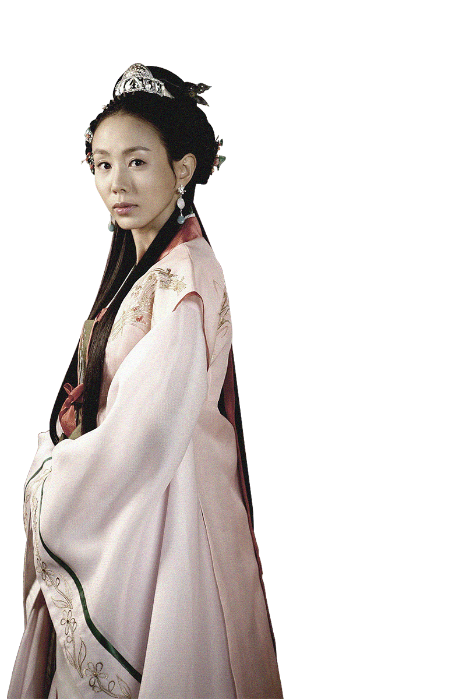
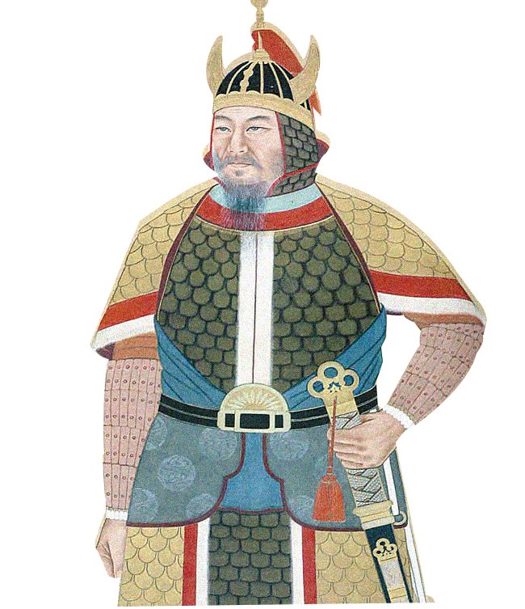

선덕여왕
IU-바람 꽃

2009년 MBC 창사 48주년 드라마로
신라의 선덕여왕인 덕만이라는 여성의
일대기를 다룬 이야기
드라마-서동요
1. 두 공주는 쌍둥이가 아니다?
드라마 상에서는 덕만 공주와 천명 공주가 쌍생아이기 때문에
덕만 공주가 버림을 받는 내용으로 나오지만 실제로 두 사람은
덕만 공주가 첫째, 천명 공주가 둘째로 쌍둥이와는 전혀 관계가 없다.
또한 셋째 공주인 선화 공주는 드라마 속에서 아예 존재하지 않는다.
드라마-선덕여왕
2. 존재하지 않는 악역, 미실
드라마를 주로 이끌어가는 주인공이자 남자 주인공의 어머니로
나오며 진흥왕부터 동생 미생까지 정인으로 둔 신라시대 최고의
팜므파탈로 나오는 그녀지만 실제 역사에는 존재하지 않는 인물이다.
또한 그녀는 드라마 상에서 시간이 한참 지나는 동안 계속 30대의
외모를 유지하고 있어서 시청자들 사이에서 혼란을 야기했다.
드라마-선덕여왕
3 역사에서는 희미한 존재, 비담
비담은 역사에서 찾아보기가 힘든 인물로 삼국사기에 ‘비담과 염종의
난을 주도하였다’ 라는 언급 외에는 선덕여왕이 비담을 대등에 앉힌
사실 정도이다. 그러나 비담을 미실의 아들로 설정하여
미실을 대신하여 주인공 덕만과 대립하면서도 그녀를 사랑하는 인물로
역사서에 거의 등장하지 않는 인물인 비담을 주연으로 확 끌어당겼다.
드라마-선덕여왕
김유신 초상화
4. 시간의 흐름을 거스르는 인물, 김유신
김유신은 삼국유사 기록으로 595년 출생이다.
천명과 덕만의 출생 기록은 없지만 드라마 속에서 진평왕이 즉위한
579년 이전으로 나온다. 그렇다면 덕만과 유신의 나이차는 16살
이상의 차이가 나지만 김유신은 드라마 속에서 중요한 등장인물로
출생연도를 덕만과 비슷한 580년대로 설정했다.